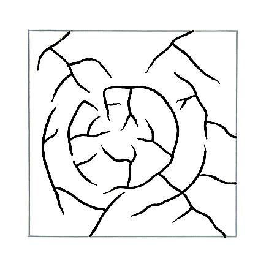

DYP Freshwater Study Site
This is for Science Olympiad Dynamic Planet practice on the Freshwater topic!
Click "New Term"; Question/Term appears here. Hover this card to see flipside!
Answers/definitions/concepts appears here.

All terms
All terms in the flashcards!
Stream Order
Strahler
If 2 streams of same order merge, resulting stream is given # 1 higher. If 2 rivers with different stream orders merge, resulting stream is given the higher of the 2 #s. A stream with a Strahler Order of 1 will most likely have straight channel.
Streve
At a confluence of 2 streams the 2 #s are added together. Magnitude increases faster than Strahler. At each juncture, add up order of both streams and assign sum to downstream segment.
Hack's Order
Assign #1 to the main stream. All immediate tributaries are given "2", and so on.
Drainage Systems
Dendritic
Looks like branching pattern of tree roots. Develops in regions underlain by homogeneous material. The subsurface geology has a similar resistance to weathering, so there's no apparent control over the direction the tributaries take. Tributaries joining larger streams at acute angles.

Rectangular
Found in regions that has undergone faulting. Streams follow path of least resistance and thus are concentrated in places where exposed rock = weakest. Movement of surface due to faulting off-sets direction of stream. As a result, tributary streams make sharp bends and enter main stream at high angles. Formed when rocks eroded along joints or fractures, resulting in clefts/rill used in draining.
Parallel
Form where there’s a pronounced slope to surface. Parallel pattern also develops in regions of parallel, elongate landforms like outcropping resistant rock bands. Tributary streams stretch out in parallel like fashion following slope of surface. Sometimes indicates presence of major fault that cut across area of steeply folded bedrock.
Trellis
Develops in folded topography like those found in Appalachian Mts. Tributaries join stream at nearly right angles. Short tributary streams enter main channel at sharp angles as they run down sides of parallel ridges (anticlines).

Radial
Develops around central elevated point. Common to such conically shaped features as volcanoes. Tributary streams extend head ward and reach upslope toward top of volcano.
Centripetal
Opposite of radial. Streams flow towards central depression. Pattern is typical in western and SW portions of US where basins exhibit interior damage. Streams feed ephemeral lakes (during wetter times of year) which evaporate during dry periods. Salt flats created in these dry lake beds as salt dissolved in lake water precipitates out of solution and is left behind when water evaporates away.
Deranged
Develop from disruption of pre-existing drainage pattern. Tributary streams appear significantly more contorted than they were prior to alteration/glaciation, etc.
Herringbone
Develops in mountain-containing regions with steep slopes and valleys where tributaries and master streams converge.

Pinnate
Resembles leaf. Feather-like, with tributaries parallel and joining the master stream at acute angles. It's a dendritic drainage pattern where the main stream receives many closely spaced, subparallel tributaries that join it at acute angles.

Annular
A drainage pattern in which streams follow a roughly circular or concentric path along a belt of weak rock, resembling in plan a ringlike pattern.
Stream Features/Landforms
Tributaries
river/stream flowing into larger river/lake.
Watershed
An area of land that drains or “sheds” water into a specific waterbody.
Divide
Elevated boundary separating areas that are drained by different river systems
Interfluve
The region of higher land between two connected river valleys. Upland area between tributaries.
Landforms
Deltas
A depositional feature of a river formed at the mouth of the river. These are wetlands that form as rivers empty their water and sediment into another body of water, such as an ocean, lake, or another river.
4 main types of deltas classified by the processes that control the build-up of silt: wave-dominated, tide-dominated, Gilbert deltas, and estuarine deltas.
Arcuate deltas: Deltas with triangular/fan shape are arcuate (arc-like) deltas (Nile River forms an arcuate delta as it empties into the Mediterranean Sea). Cuspate deltas are more pointed than the arcuate delta, and is tooth-shaped. Formed where sediments are deposited onto a straight shoreline with strong waves.
Deltaic lobe
A wetland formation that forms as a river empties water and sediment into other bodies of water.
Fluvial-dominated Deltas
Found in areas of low tidal range and low wave energy.
Gilbert Deltas
A type of fluvial-dominated delta formed from coarse sediments. Wedge-shaped body of sediment, comprising relatively thin, flat-lying, topset sediments, long, steeply dipping foresets which prograde (see progradation) from the river mouth, and thinner, flat-lying, bottomset or toeset deposits.
Wave-dominated deltas
Controlled by wave-driven sediments. With a high wave energy near shore and a steeper slope offshore, waves will make river deltas smoother. Waves can also be responsible for carrying sediments away from the river delta, causing the delta to retreat.
Tide-dominated deltas
Comprised of a river that is directly connected to the sea via channels that are typically flanked by low-lying vegetated floodplains and swamp areas.
Fjords
Long, deep, narrow body of water that reaches far inland. Fjords are often set in a U-shaped valley with steep walls of rock on either side.

Esker
A long winding ridge of gravel and other sediment deposited by meltwater from a retreating glacier/ice sheet.
Tarns
Small mountain lake. Form in glacially-carved cirques.